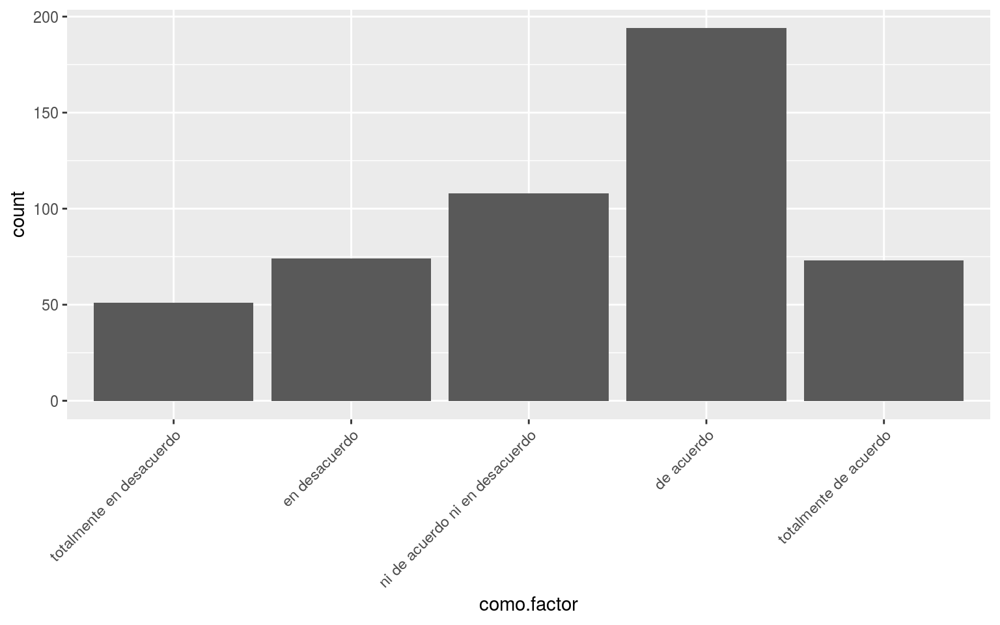

3.3 Estructuras de datos
R tiene diferentes tipos y estructuras de datos que permiten al usuario aprovechar el lenguaje. La manipulación de estos objetos es algo que se hace diario y entender cómo operarlos o cómo convertir de una a otra es muy útil.
3.3.1 Clases atómicas (atomic classes)
R tiene 6 clases atómicas6 (R Core Team 2016a).
character(caracter)numeric(números reales o decimales, a esta clase también se le llamadouble)integer(números enteros)logical(booleanos, i.e. falso-verdadero)complex(números complejos)raw(contiene bytes)
| Type | Tipo | Ejemplo |
|---|---|---|
character |
Caracter | ‘hola’, ‘x’ |
numeric |
Numérico | 67, 45.5 |
integer |
Integer | 2L, 67L |
logical |
Lógico | TRUE, FALSE, T, F |
complex |
Complejo | 1+4i |
raw |
Crudo | 01 - imprime hexadecimales |
Algunos comandos importantes para las clases atómicas son su tipo typeof(), su tamaño length() y sus atributos attributes(), es decir, sus metadatos.
############ Ejemplo 1
x <- "una cadena"
typeof(x)## [1] "character"length(x) # tamaño: ¿cuántas cadenas son?## [1] 1nchar(x) # Número de caracteres## [1] 10attributes(x) # Le pusimos metadatos?## NULL############ Ejemplo 2
y <- 1:10
typeof(y)## [1] "integer"length(y)## [1] 10attributes(y)## NULL############ Ejemplo 3
z <- c(1L, 2L, 3L) # Nota como para denotar enteros se incluye una L al final
typeof(z)## [1] "integer"length(z)## [1] 33.3.2 Vectores
Los vectores son la estructura de datos más básica de R (H. Wickham 2014a). Hay dos tipos de vectores: vectores atómicos y listas.
Típicamente -en libros, blogs, manuales, cuando se mencionan vectores se refieren a los atómicos y no a las listas.
3.3.2.1 Vectores atómicos
Los vectores pueden ser pensados como celdas contiguas que contienen datos (R Core Team 2016a), es decir, elementos de alguna de las clases atómicas (character, logical, integer, numeric). Se puede crear un vector vacío con el comando vector() así como especificar su tamaño y su clase.
v <- vector()
v ## logical(0)## Especifico clase y longitud
vector("character", length = 10)## [1] "" "" "" "" "" "" "" "" "" ""## Lo mismo pero usando un wrapper
character(10)## [1] "" "" "" "" "" "" "" "" "" ""## Numerico de tamaño 5
numeric(5)## [1] 0 0 0 0 0## Lógico tamaño 5
logical(5)## [1] FALSE FALSE FALSE FALSE FALSE3.3.2.2 Tipos de vectores
Realiza los siguientes ejemplos en la consola de R.
x <- rep(1, 5)
x
typeof(x)
xi <- c(1L, 3L, 56L, 4L)
xi
typeof(xi)
y <- c(T, F, T, F, F, T)
z <- c("a", "aba", "andrea", "b", "bueno")Dijimos que la función typeof permitía preguntarle a un objeto qué tipo de dato es. La función class permite hacer una pregunta similar. La diferencia radica en el punto de vista: el primero da el tipo del objeto como un objeto en R mientras que, el segundo identifica el tipo del objeto desde el punto de vista de la programación orientada a objetos en R.
class(z)## [1] "integer"Otra función útil es str pues permite desplegar en forma compacta la estructura interna de un objeto en R:
str(z)## int [1:3] 1 2 33.3.2.3 Operaciones con vectores
Aritmética: por default, se realizan componente a componente.
a <- c(1:5)
b <- a + 10
b## [1] 11 12 13 14 15c <- sqrt(b) # square root = raíz
c## [1] 3.316625 3.464102 3.605551 3.741657 3.872983a + c## [1] 4.316625 5.464102 6.605551 7.741657 8.87298310 * (a + c)## [1] 43.16625 54.64102 66.05551 77.41657 88.72983a^2## [1] 1 4 9 16 25a * c## [1] 3.316625 6.928203 10.816654 14.966630 19.364917Agregar elementos aun vector ya creado
a <- c(a, 7)
a## [1] 1 2 3 4 5 7Para construir datos rápido, podemos usar comandos como rep, seq o distintas distribuciones, e.g., la normal rnorm, uniformes runif o cualquiera en esta lista.
Prueba lo siguiente:
# Dame un vector donde el minimo sea 0, maximo 1 en intervalos de 0.25
seq(0, 1, 0.25)
# Vector con 10 unos
rep(1, 10)
# 5 realizaciones de una normal(0,1)
rnorm(5)
# De una normal(10, 5)
rnorm(5, mean = 10, sd = sqrt(5))
# De una uniforme(0,1)
runif(5)
# De una uniforme(5, 15)
runif(5, min = 5, max = 15)3.3.2.4 Atributos de un vector
Cada objeto tiene atributos. Hay atributos específicos para vectores que, sin importar su clase, tienen en común. Ya revisamos algunos: tamaño (length), clase (class). También son importantes atributos como los nombres
calificaciones <- c(6, 5, 8, 9, 10)
names(calificaciones) <- c("Maria", "Jorge", "Miguel", "Raúl", "Carla")
attributes(calificaciones)## $names
## [1] "Maria" "Jorge" "Miguel" "Raúl" "Carla"# O llamamos directo a los nombres
names(calificaciones)## [1] "Maria" "Jorge" "Miguel" "Raúl" "Carla"3.3.2.5 Coerción
Los vectores solo permiten tener objetos del mismo tipo. Hay coercioń explícita (explicit coercion, también llamada cast) utilizando as.<nombre_clase>.
as.numeric()
as.character()
as.integer()
as.logical()Utilizando coerción explícita garantizamos siempre tener el resultado en cuanto a la clase del objeto.
c(c("a", "b", "c"), as.character(c(1, 2, 3)))## [1] "a" "b" "c" "1" "2" "3"Realizar coerción explícita implica trabajar extra y, a veces, no se puede realizar de manera directa: los datos pueden venir sucios con varios tipos de datos mezclados en una misma variable.
R mezcla distintos tipos de datos y realiza una coerción implícita utilizando reglas razonables. En otras palabras, R realiza una coerción explícita por default entre los objetos y “decide” cuál es la clase del vector.
# Número + caracter = caracter
c(1.7, "a")## [1] "1.7" "a"# Lógico + número = número
c(TRUE, 2)## [1] 1 2# Número + caracter = caracter
c("a", TRUE)## [1] "a" "TRUE"En ese proceso, puede haber pérdidas de información, por ejemplo, al mezclar valores lógicos con numéricos, Se confunden valores verdaderos con un uno. Hay que tener cuidado particularmente cuando se limpian los datos:
c(c(T, T, T), c(1, 2, 3))## [1] 1 1 1 1 2 3Hay conversiones que no tienen sentido y generan pérdida de información total:
x <- c("a", "b", "c")
as.numeric(x)## [1] NA NA NAas.logical(x)## [1] NA NA NANormalmente, se obtiene un mensaje de advertencia (warning) cuando alguna coerción puede derivar en pérdida de información (H. Wickham 2014a).
La última consideración importante es que para R un objeto no es igual, aunque no se pierda información, si su tipo no es el mismo
x <- 0:5
identical(x, as.numeric(x))## [1] FALSEEn este ejemplo, cuando declaramos \(x\) no especificamos su clase y R decidió que era entero. Al coercionar al objeto para que fuese numérico, R no considera a los dos objetos iguales.
En general, la coersión de R es muy útil pues permite incluso comparar objetos de distintas clases si el resultado tiene sentido
1 < "2"## [1] TRUE
Lo importante es recordar que es importante revisar las advertencias que R arroja a la consola y verificar que el resultado obtenido es el deseado o que la pérdida de información no se puede evitar.
3.3.2.6 Extraer partes del vector
R tiene constructos que permite acceder a elementos individuales o subconjuntos de un vector a través de operaciones de indexación (indexing) (R Core Team 2016a, sección “Indexing”).
Para los vectores, es posible acceder al i-ésimo elemento usando x[i].
x <- c(10, 20, 30, 40, 50)
names(x) <- c("a", "b", "c", "d", "e")
# Accedemos al 4to elemento
x[4]## d
## 40Además de la indexación con un entero, se puede
# x[i] - caso anterior
# x[[i]]
x[[4]]## [1] 40# x["a"] - por nombre (cuando existen)
x["a"]## a
## 10# Se puede extraer un subconjunto
x[1:3]## a b c
## 10 20 30
[] vs. [[]]
Estas dos formas de acceder a los elementos de un vector (utilizados también en otras estructuras de datos) suelen causar confusión.
En vectores, [[ casi no se utiliza, aunque son ligeramente diferentes. Como vimos en el ejemplo, [[ quita los nombres o atributos y permite extraer únicamente un elemento a la vez.
3.3.3 Matrices
Las matrices son un tipo especial de vectores. Son un vector atómico con una dimensión adicional pues tienen filas y columnas.
m <- matrix(c(1, 2, 3, 4), nrow = 2, ncol = 2)
m## [,1] [,2]
## [1,] 1 3
## [2,] 2 4En términos de sus atributos por default, la diferencia entre los vectores y las matrices es:
x <- c(1, 2, 3, 4)
attributes(x)## NULLattributes(m)## $dim
## [1] 2 2Como puedes notar, las matrices se forman por default usando los elementos del vector para llenar columna por columna de izquierda a derecha. Podemos simplemente “agregarle” una dimensión a un vector para construir una matriz.
m <- 1:10
m## [1] 1 2 3 4 5 6 7 8 9 10dim(m) <- c(2, 5)
m## [,1] [,2] [,3] [,4] [,5]
## [1,] 1 3 5 7 9
## [2,] 2 4 6 8 10También podemos pegar o concatenar vectores de la misma longitud como si fueran columnas de una matriz usando cbind o como si fueran filas rbind (r = row, c = column).
x <- runif(4)
y <- rnorm(4)
cbind(x, y)## x y
## [1,] 0.96287589 -0.3065290
## [2,] 0.01111454 0.6312563
## [3,] 0.82282778 -0.8850892
## [4,] 0.42547561 0.3376346rbind(x, y)## [,1] [,2] [,3] [,4]
## x 0.9628759 0.01111454 0.8228278 0.4254756
## y -0.3065290 0.63125627 -0.8850892 0.3376346Le agregamos atributos para accesar más fácilmente a los objetos.
m <- matrix(c(x, y), nrow = 4, ncol = 2, byrow = T,
dimnames = list(paste0("row", 1:4),
paste0("col", 1:2)))
m## col1 col2
## row1 0.9628759 0.01111454
## row2 0.8228278 0.42547561
## row3 -0.3065290 0.63125627
## row4 -0.8850892 0.33763458dimnames(m)## [[1]]
## [1] "row1" "row2" "row3" "row4"
##
## [[2]]
## [1] "col1" "col2"Acceder a elementos de una matriz puede hacerse de muchas formas
# m[i] - quinto elemento, contando desde entrada 1,1 por columnas
m[5]## [1] 0.01111454# m[[i]] - quinto elemento, quitando atributos
m[[5]]## [1] 0.01111454# m[i, j] - mismo elemento que m[5] pero usando notacion fila, columna
m[1, 2]## [1] 0.01111454# m[[i, j]] - mismo elemento, quitando atributos
m[[1, 2]]## [1] 0.01111454# Puedo llamar por su nombre
m["row1", "col2"]## [1] 0.01111454# Misma forma, quitando atributos
m[["row1", "col2"]]## [1] 0.01111454# m[i, ] - toda la fila i-ésima
m[1, ]## col1 col2
## 0.96287589 0.01111454# m[, j] - toda la columna j-ésima
m[, 2]## row1 row2 row3 row4
## 0.01111454 0.42547561 0.63125627 0.33763458# Índices o nombres son equivalentes
m[1, 1] == m["row1", "col1"]## [1] TRUE
[] vs. [[]]
En matrices, [[ casi no se utiliza. Como vimos en el ejemplo, [[ quita los nombres o atributos y permite extraer únicamente un elemento a la vez.
3.3.4 Listas
Tiene características muy similares a un vector pero permite que cada elemento sea de un tipo distinto. Mas aún, es posible incluir una lista como un elemento de otra lista y por eso también se les conoce como vectores recursivos (recursive vectors) (H. Wickham 2014a, sección “lists”).
Para crear una lista vacía utilizas list() y para coercionar un objeto a una lista usa as.list().
x <- list(3L, 3.56, 1 + 4i, TRUE, "hola", list("genial", 1))
length(x)## [1] 6class(x)## [1] "list"class(x[1])## [1] "list"class(x[[1]])## [1] "integer"y <- as.list(1:10)
length(y)## [1] 10Nota como muchas propiedades que tenían los vectores atómicos los tienen también las listas. Las listas también pueden tener nombres
# Lista vacia
lista <- list()
# Concatenamos un vector
lista[["numeros"]] <- c(1, 34, 45.5, 34)
# Concatenamos un objeto de datos
lista[["datos"]] <- head(iris)
# Concatenamos un número
lista <- c(lista, 3) # ¡No le tuvimos que poner nombre!
lista## $numeros
## [1] 1.0 34.0 45.5 34.0
##
## $datos
## Sepal.Length Sepal.Width Petal.Length Petal.Width Species
## 1 5.1 3.5 1.4 0.2 setosa
## 2 4.9 3.0 1.4 0.2 setosa
## 3 4.7 3.2 1.3 0.2 setosa
## 4 4.6 3.1 1.5 0.2 setosa
## 5 5.0 3.6 1.4 0.2 setosa
## 6 5.4 3.9 1.7 0.4 setosa
##
## [[3]]
## [1] 3R tiene muchos datos de ejemplo que son utilizados en muchos paquetes, blogs y libros. Utiliza help(iris) para saber más del dataset usado arriba.
Por su propiedad recursiva, se navega diferente. Repasamos las principales maneras de extraer los elementos de la lista utilizando la lista \(x\) declarada anteriormente:
# Recordamos a x
x## [[1]]
## [1] 3
##
## [[2]]
## [1] 3.56
##
## [[3]]
## [1] 1+4i
##
## [[4]]
## [1] TRUE
##
## [[5]]
## [1] "hola"
##
## [[6]]
## [[6]][[1]]
## [1] "genial"
##
## [[6]][[2]]
## [1] 1# x[i] - el i-ésimo elemento de la lista
x[3]## [[1]]
## [1] 1+4i## Nota como la clase del objeto sigue siendo lista
class(x[3])## [1] "list"# x[[i]] - el i-ésimo elemento de la lista
x[[3]]## [1] 1+4i## La clase ahora es la del objeto dentro del "espacio" 3 en la lista original
class(x[[3]])## [1] "complex"# Nombramos la lista
names(x) <- c("entero", "numerico", "complejo"
, "booleano", "caracter", "lista")
# Ganamos formas de accesar los objetos
# x$a - llamamos al elemento con nombre "a"
x$entero## [1] 3class(x$entero) # Es equivalente a [[]]## [1] "integer"# x$"a"
x$"complejo"## [1] 1+4i# x[["lista"]][i] - i-ésimo elemento de la lista dentro de la lista
x[["lista"]][1]## [[1]]
## [1] "genial"# x[[j]][i] - Mismas reglas en la lista anidada
x[[6]][1]## [[1]]
## [1] "genial"# x[[j]][[i]] - i-ésimo elemento en la lista del j-ésimo elemento de x
x[[6]][[1]]## [1] "genial"
[] vs. [[]]
En listas, [[ es fundamental para accesar correctamente los objetos y poder navegar la lista.
Como en vectores y matrices, [[ quita los nombres o atributos y permite extraer únicamente un elemento a la vez. En listas, además, devuelve el objeto dentro del i-ésimo elemento. Por el contrario, [ devuelve una lista.
Puedo poner listas dentro de listas, dentro de listas… Se navega en orden como en el ejemplo.
Las longitudes de los objetos en la lista se pueden pensar por niveles, por su propiedad recursiva.
# El tamaño es del "primer nivel".
length(x)## [1] 6# Hay 6 elementos en x, todos de diferentes tipos
names(x)## [1] "entero" "numerico" "complejo" "booleano" "caracter" "lista"# Para obtener la longitud dentro del i-ésimo elemento de la lista, debo
length(x[[6]]) # La lista anidada tiene 2 elementos## [1] 2# que no es lo mismo que
length(x[6]) # Donde hay un solo elemento: una lista## [1] 13.3.5 Factores (factor)
Los factores son otro tipo de vectores pero que ayuda a representar datos del tipo categórico u ordinal, es decir, cuando los posibles valores de la variable tipo caracter es limitado. Por ejemplo, son útiles cuando tenemos una variable como “sexo” donde, al menos por ahora, legalmente solo puede tomar los valores hombre o mujer. Si, en cambio, se tiene un vector de nombres es conveniente dejarlo como caracter.
Un factor se guarda como un enteros pero con etiquetas encima tal que cada entero corresponde a una etiqueta (label).
y <- c("no", "si", "si", "no")
class(y)## [1] "character"# Debemos pedirle explícitamente que lo guarde como factor
x <- factor(c("no", "si", "si", "no"))
x## [1] no si si no
## Levels: no siAl imprimir el objeto, se observa como los niveles fueron asignados. Éstos corresponden al número de valores únicos en el vector de caracter y se asignan en orden alfabético los valores.
Los factores se despliegan como si fueran vectores tipo caracter y algunas operaciones son análogas:
table(x)## x
## no si
## 2 2La ganancia es que son más rápidas. Aunque a veces los factores se comportan como vectores tipo caracter pero debemos recordar que por debajo son enteros y tenemos que ser cuidadosos si los tratamos como caracteres.
Supongamos por ejemplo que tenemos un factor con valores 5, 6 o 7. Lo tenemos guardado como factor.
ej <- factor(c("7", "6", "5", "7", "5", "7", "6", "5", "5", "6","5"))
ej## [1] 7 6 5 7 5 7 6 5 5 6 5
## Levels: 5 6 7Dado que los valores son números, conceptualmente tiene sentido operarlos como tal:
as.integer(ej)## [1] 3 2 1 3 1 3 2 1 1 2 1Obtuvimos los enteros a los que las etiquetas originales habían sido asignados. Para recuperar los valores originales, debemos hacer
as.integer(as.character(ej))## [1] 7 6 5 7 5 7 6 5 5 6 5Algunos métodos que están hechos para caracteres coercionan un factor a caracter mientras que otros arrojan un error. Si usas métodos de caracteres, lo mejor es “castear” (coerción explícita) a caracter tu factor utilizando as.character(mifactor). De esta manera se pierden algunas cosas pero te aseguras que las cosas funcionen como deben.
summary(x)## no si
## 2 2summary(as.character(x))## Length Class Mode
## 4 character characterSummary
R funciona mejor gracias a sus convenciones, es decir, porque los contribuyentes se ponen de acuerdo en seguir ciertas reglas de manera que sea más fácil utilizar los paquetes de otros (con sus objetos y funciones).
La función summary es la función genérica que produce resumenes para objetos de muchas clases. La función invoca métodos que dependen de la clase del argumento enviado (en estos ejemplos, el resumen para un factor y para un caracter respectivamente).
Los factores pueden incluir únicamente los niveles con los que fueron definidos. Por esa razón, la unión de dos factores ddeclarados en forma independiente puede dar resultados no deseados.
y <- factor(c("si", "no", "tal vez"))
c(x, y)## [1] 1 2 2 1 2 1 3class(c(x, y))## [1] "integer"No es posible entonces recuperar el valor de las etiquetas. R hizo las operaciones posibles pero hubo pérdida de información. Para concatenar dos factores correctamente, es necesario:
factor(c(as.character(x), as.character(y)))## [1] no si si no si no tal vez
## Levels: no si tal vezEn general, se recomienda incluir el valor de u nnivel posible, independientemente de si se tiene o no esa respuesta. Sin embargo, el problema al concatenar persiste.
x <- factor(c("no", "si", "si", "no"), levels = c("no", "si", "tal vez"))
c(x, "tal vez")## [1] "1" "2" "2" "1" "tal vez"Para datos ordinales como las respuestas en una pregunta de encuesta con escala likert7 los factores son también objetos útiles.
Veamos un ejemplo en donde tenemos 500 respuestas a la pregunta “este tutorial es muy útil”:
set.seed(2887)
respuestas <- sample(x = c(1:5), size = 500, replace = T
, prob = c(0.1, 0.15, 0.2, 0.4, 0.15))
y <- factor(
x = respuestas,
levels = c("1", "2", "3", "4", "5"),
labels = c("totalmente en desacuerdo", "en desacuerdo"
, "ni de acuerdo ni en desacuerdo"
, "de acuerdo", "totalmente de acuerdo"),
ordered = T)
table(y)## y
## totalmente en desacuerdo en desacuerdo
## 51 74
## ni de acuerdo ni en desacuerdo de acuerdo
## 108 194
## totalmente de acuerdo
## 73Nota como la tabla está ordenada de izquierda a derecha con la respuesta más en desacuerdo a la más de acuerdo pues introducimos la opción ordered = T en la definición del factor debido a que las respuestas están en una escala ordinal.
Otras funciones útiles
En el ejemplo anterior, introducimos las funciones:
-
set.seed: sirve para fijar la semilla con la que se generan números aleatorios. Esto es importante pues al fijarla se puede reproducir exactamente el mismo vector de respuestas cuantas veces sea necesario. -
sample: permite extraer muestras de un vectorxespecificando el tamaño de la muestra, si es muestreo con reemplazo y permite establecer pesos para el muestreo.
table(y)## y
## totalmente en desacuerdo en desacuerdo
## 51 74
## ni de acuerdo ni en desacuerdo de acuerdo
## 108 194
## totalmente de acuerdo
## 73Por último, al utilizar factores (y más aún, declarar un orden cuando es conceptualmente pertinente) es más fácil visualizar correctamente los datos con menor desgaste. Si graficamos las respuestas como caracter recibimos:
library(ggplot2)
df <- data.frame(como.caracter = as.character(y), como.factor = y)
ggplot(df, aes(x = como.caracter)) + geom_bar() +
theme(axis.text.x = element_text(angle = 45, hjust = 1))
Si utilizamos el factor ordenado obtenemos:
ggplot(df, aes(x = como.factor)) + geom_bar() +
theme(axis.text.x = element_text(angle = 45, hjust = 1))
Nota
En R muchas cosas son más fáciles si se utliza la estructura de datos apropiada y se establecen correctamente todos los metadatos necesarios al objeto para que los defaults de R faciliten el trabajo.
Al utilizar factores cuando es pertinente se gana, al menos, lo siguiente:
- Se almacenan los datos usando menos memoria. Esto es importante pues R trabaja en ram.
- El rendimiento es mejor que usando caracteres.
- Por default R utiliza los métodos apropiados para el tipo de variable. Por ejemplo, si se introduce un factor como variable dependiente en un modelo de regresión, automáticamente aplica un logit y no un ols.
- Se pueden especificar elementos, como el orden de los niveles, que son útiles para el análisis y presentación de resultados.
A pesar de sus ventajas, si son incorrectamente utilizados las estructuras de datos pueden resultar en pérdidas de información o comportamientos indeseados.
3.3.6 Data frames
Los dataframes son una de las estructuras de datos más importantes para guardar datos en R (H. Wickham 2014a, sección “Data frames”). En python, existe una estructura similar en la librería pandas creado para facilitar el análisis de datos en este lenguaje sin la necesidad de cambiar a un lenguaje de dominio específico como R (McKinney 2010, sección “What problem does pandas solve?”).
Este objeto es tan importante porque muchos de los modelos estadísticos que se utliizan necesitan una estructura de datos tabular.
Los dataframes tienen atributos adicionales a los que tienen los vectores:
rownames()colnames()names()head()te enseña las primeras 6 lineas.tail()te enseña las últimas 6 líneas.nrow()te da el número de filasncol()te da el número de columnasstr()te dice el tipo de cada columna y te muestra ejemplos
Podemos ver a los dataframes como un tipo de lista con algunas restricciones (R Core Team 2016a, sección “Data frames”):
- Los componentes deben ser vectores, factores, matrices numéricas, listas u otros dataframes.
- Las matrices, listaa y otros data frames proveen de tantas columnas, elementos o variables como las originales, respectivamente.
- Los vectores numéricos, lógicos y factores se incluyen en el dataframe sin transformaciones adicionales. Los vectores tipo caracter se coercionan a factores.
- Todos los elementos (las columnas) deben tener la misma longitud o tamaño.
Los dataframes se pueden crear utilizando comandos como read.table() (que tiene como caso particular read.csv(). Se verá con detalle el uso de estas funciones en la sección 5.1.
Para convertir un dataframe a una matriz se utiliza data.matrix(). La coerción es forzada y no necesariamente da lo que uno espera.
Se pueden crear data.frames con la función data.frame().
df <- data.frame(
x = rnorm(10),
y = runif(10),
n = LETTERS[1:10],
stringsAsFactors = F # F = FALSE, T = TRUE
)
head(df)## x y n
## 1 0.89814648 0.52584158 A
## 2 -0.37532709 0.68789829 B
## 3 -2.17112789 0.60079780 C
## 4 -0.63011959 0.86922537 D
## 5 0.03778982 0.44119997 E
## 6 0.35565256 0.02638035 Fdim(df)## [1] 10 3str(df)## 'data.frame': 10 obs. of 3 variables:
## $ x: num 0.8981 -0.3753 -2.1711 -0.6301 0.0378 ...
## $ y: num 0.526 0.688 0.601 0.869 0.441 ...
## $ n: chr "A" "B" "C" "D" ...
¿Por qué usar la opción stringsAsFactors = F?
Por default las columnas tipo caracter en un dataframe son convertidas a factor. Esto es útil cuando se tienen los datos limpios y se va a proceder a modelas sin realizar mayores transformaciones o limpiezas a los datos. Sin embargo, cuando se realizarán manipulaciones a los mismos, es recomendable cambiar la opción por default para leer columnas como caracter, de esta forma se evitan los problemas mencionados en la sección de factores.
Es posible concatenar columnas o filas:
df <- cbind(df, data.frame(z = rexp(10)))
df <- rbind(df, c(rnorm(1), runif(1), "K", rexp(1)))
dim(df)## [1] 11 4Repasamos las principales maneras de extraer los elementos de un dataframe utilizando el objeto \(df\):
df <- data.frame(
x = rnorm(4),
y = runif(4),
n = LETTERS[1:4],
stringsAsFactors = F # F = FALSE, T = TRUE
)
# df[i]
df[1] # La primera columna## x
## 1 0.38112864
## 2 0.51810269
## 3 -0.84698783
## 4 0.03558633class(df[1]) # Regresa un dataframe## [1] "data.frame"# df[[i]]
df[[1]] # La primera columna## [1] 0.38112864 0.51810269 -0.84698783 0.03558633class(df[[1]]) # Regresa un vector ## [1] "numeric"# df[i, j]
df[1,2] # elemento en la primera fila, segunda columna## [1] 0.5346584# df[[i, j]]
df[[1, 2]] # mismo resultado## [1] 0.5346584# df$columna
df$x # La columna llamada x## [1] 0.38112864 0.51810269 -0.84698783 0.03558633# df$"columna"
df$"x"## [1] 0.38112864 0.51810269 -0.84698783 0.03558633df[["n"]][1] # Podemos navegar igual que en una lista## [1] "A"
[] vs. [[]]
Debido a que los dataframes son un caso particular de las listas, [[ es también fundamental para accesar correctamente los objetos.
[[ quita los nombres o atributos, permite extraer únicamente un elemento a la vez y devuelve el objeto dentro del i-ésimo elemento.
[ devuelve un data frame con la columna(s) que sea nombradas o los índices que sean utilizados.
Cuando se declara un dataframe automáticamente se verifican que los nombres sean sintácticamente válidos con la función make.names
data.frame("2000" = c(100:104)
, "una-variable" = c(200:204)
, ".2000" = c(300:304)
)## X2000 una.variable X.2000
## 1 100 200 300
## 2 101 201 301
## 3 102 202 302
## 4 103 203 303
## 5 104 204 304Nombres sintácticamente válidos
Los dataframes pueden tener únicamente nombres sintácticamente válidos (Hornik 2016, sección “What are valid names?”):
- Está compuesto por letras, números, puntos o guiones bajos.
- No deben empezar con números. Tampoco pueden empezar con un punto seguido de un número.
- No se permiten palabras reservadas (if, else, repeat, next, TRUE, FALSE, entre otras).
Bibliografía
R Core Team. 2016a. R Language Definition, Manual for R Version 3.3.2. Vienna, Austria: R Foundation for Statistical Computing. https://cran.r-project.org/doc/manuals/r-release/R-lang.html.
Wickham, Hadley. 2014a. Advanced R. CRC Press.
McKinney, Wes. 2010. “pandas: Python Data Analysis Library.” http://pandas.pydata.org/.
Hornik, Kurt. 2016. R Faq. Frequently Asked Questions on R (version 2016-06-06). Vienna, Austria: R Foundation for Statistical Computing. https://cran.r-project.org/doc/FAQ/R-FAQ.html.